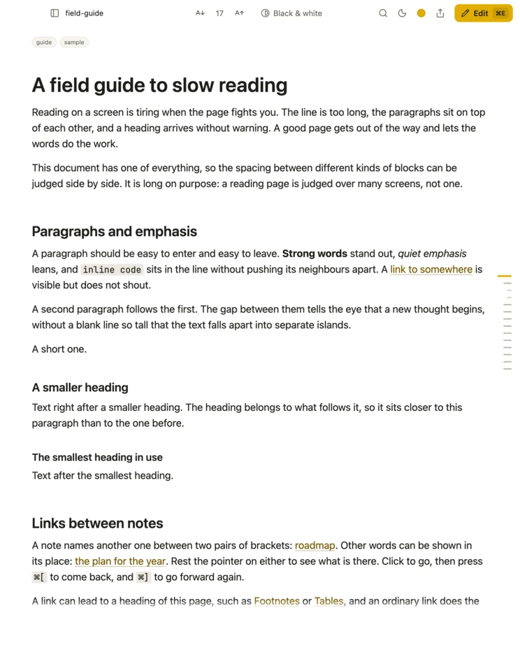
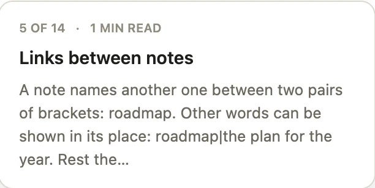
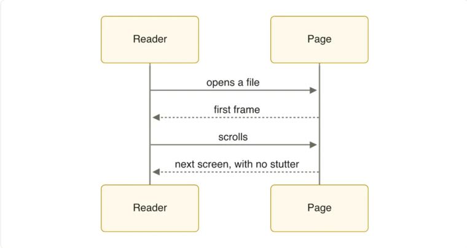
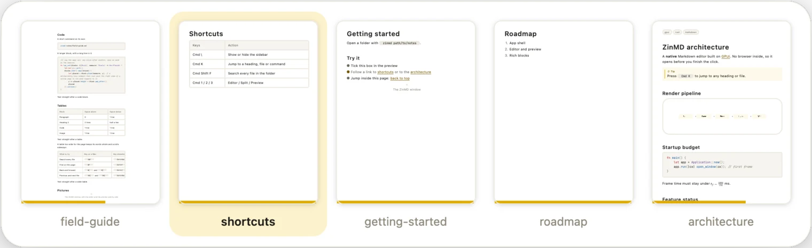
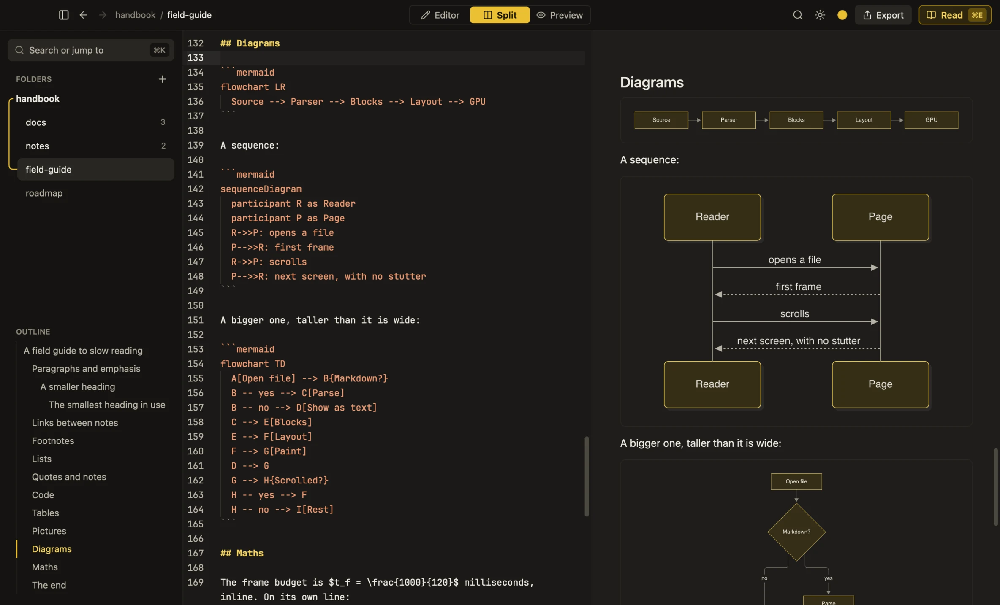

Reading
A page, not a window full of buttons
A file opens as a sheet of paper. Nothing sits around the text but a menu that steps aside while you read.

ZinMD is a fast, native reader and editor. A file opens as a page in about a tenth of a second, and one key turns it into the editor.
What it does
Everything on the page is there to help you read. When you want to change something, the editor is one key away.
Reading
A file opens as a sheet of paper. Nothing sits around the text but a menu that steps aside while you read.

Speed
0.1 s
No browser inside. ZinMD is native, written in Rust, and draws everything itself. Measured on an Apple M4 Pro.
Finding your place
Point at a mark on the rail to see what a section is about. Click to go there.

Rich pages
LaTeX math and Mermaid diagrams appear as you type. No browser, no waiting.

Yours
Pick the accent you like from the top bar. The whole app follows, in both appearances.
MustardLightDark
Many at once
Give a file a window of its own, put two side by side, and flip through them with Control Tab. Each one comes back where you left it.

The editor
One key turns the page into the editor: the source, a live preview, or both side by side, scrolling together.

Download
Version 0.1.0. Free and open source under the MIT licence, with no account and no tracking.
12 or later
Or run it without installing: a zip for Apple Silicon or Intel.
10 or 11, 64-bit
The installer offers ZinMD for your Markdown files.
64-bit
The .deb and .rpm offer ZinMD for your Markdown files.
ZinMD is not signed yet, so macOS and Windows ask before they open it the first time. How to open it.